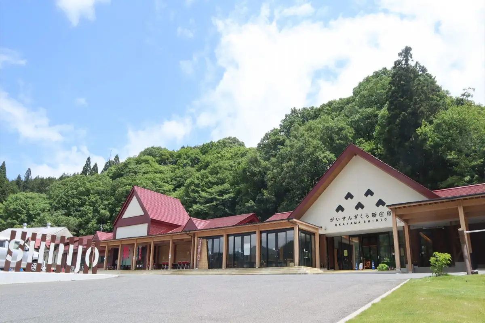
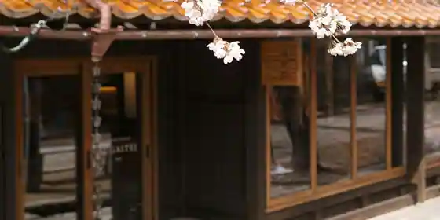
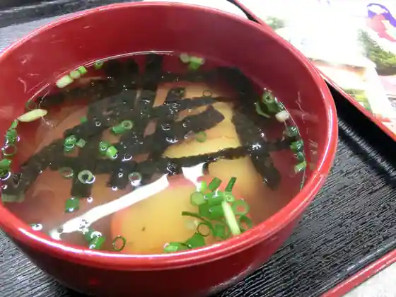
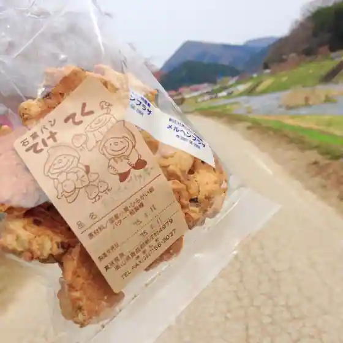
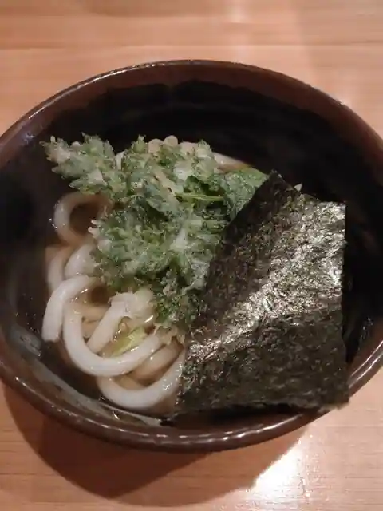
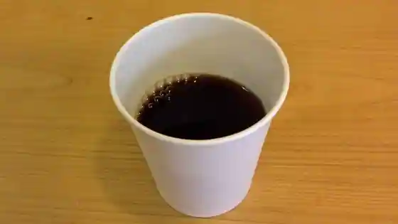
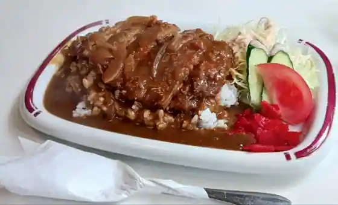
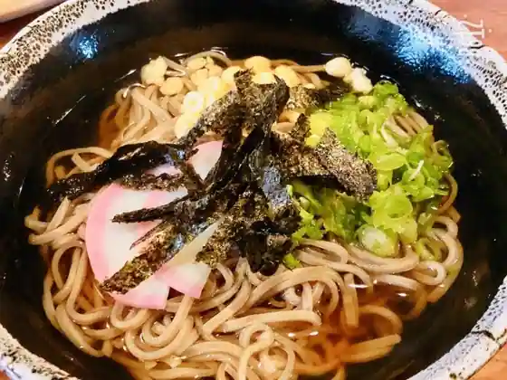

Shinjo, Okayama: things to do, food and stays
Shinjo · Okayama
Shinjo
Highlighted on the Okayama map.

Stay
新庄宿 須貝邸

Shinjo Yado Sugai Tei
Inn in Shinjo with a quiet countryside setting.
Dining
お食事処 夢ひめ

O Shokuji Tokoro Yume Hime
ドライブイン新庄
Doraibuin Shinjo
カントリーキッチン てけてく

Kantori Kitchen Teketeku
本坂屋

Hon Saka Ya
詩季彩

Shiki Sai
味好

Aji Ko
さくら茶屋

Sakura Chaya